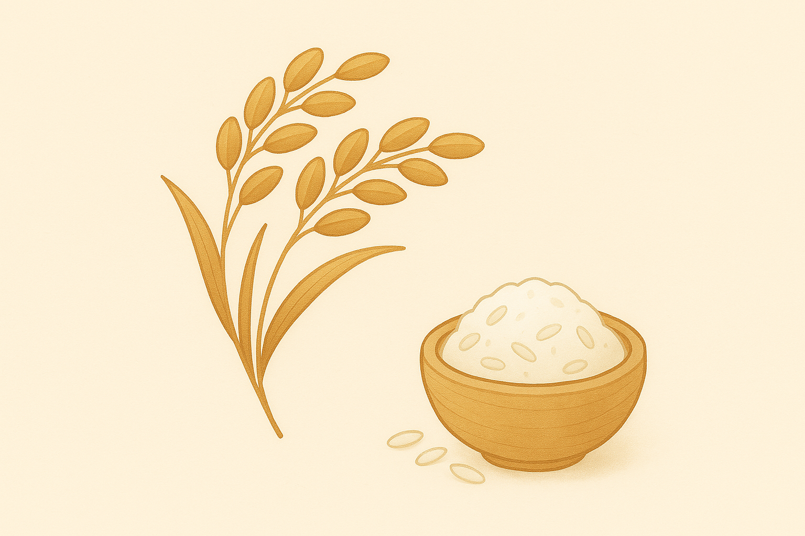
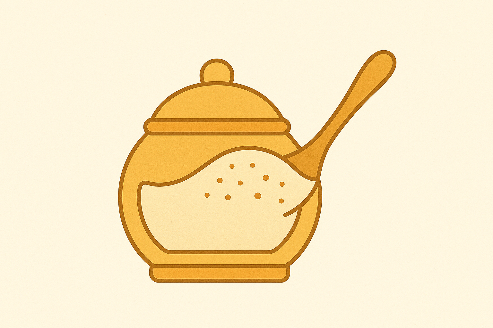
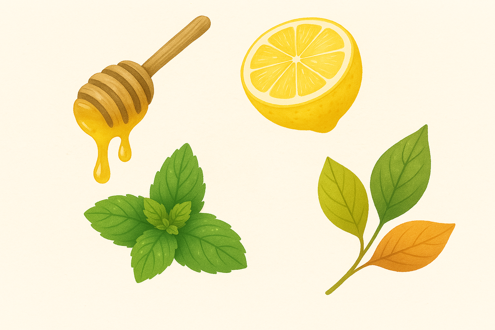

おいしさの理由は、"やさしい素材" にあります。

国産米粉100%使用
グルテンフリーで消化にやさしい国産米粉だけを使用しています。もちもちとした独特の食感と口どけの良さが特徴です。

自然な甘みを大切に
白砂糖は使用せず、てんさい糖やメープルシロップなど自然由来の甘味料を使用しています。やさしい甘さと豊かな風味が楽しめます。

添加物は最小限に
保存料や着色料などの添加物はできるだけ使わず、素材本来の風味と食感を大切にしています。身体にも環境にもやさしい商品づくりを心がけています。
生産者とのつながり
使っている素材の生産者さんとも顔の見える関係を築き、安心・安全な品質を第一にしています。定期的に農家さんを訪問し、栽培方法や品質管理について直接お話を伺っています。
comocoのおやつは、こうした「つながり」の中で生まれています。